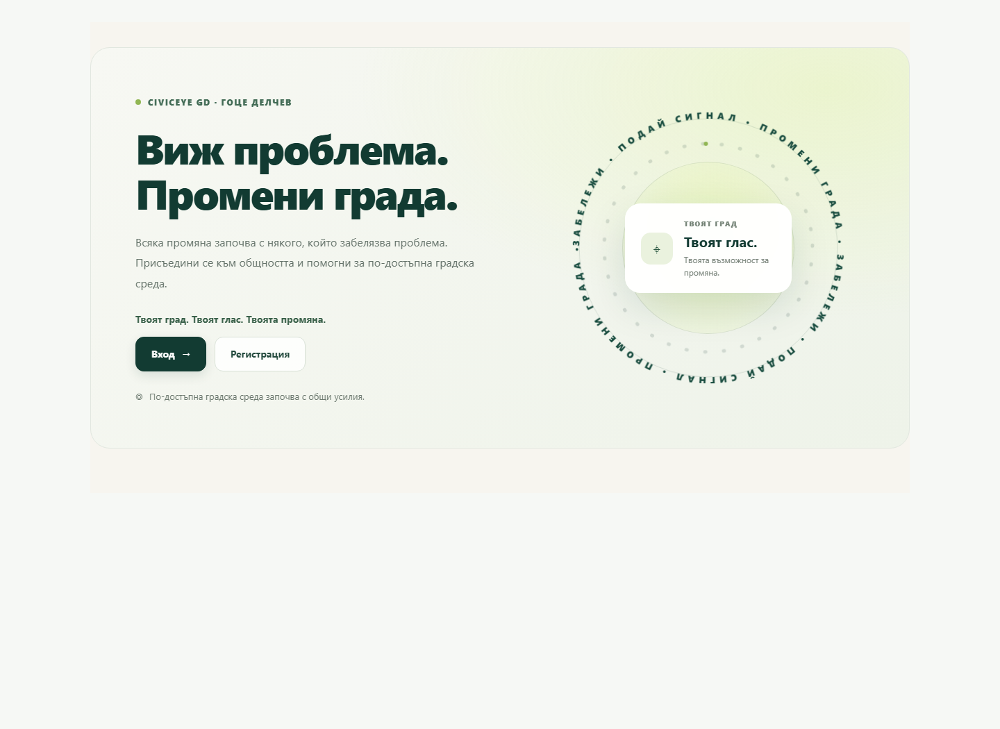
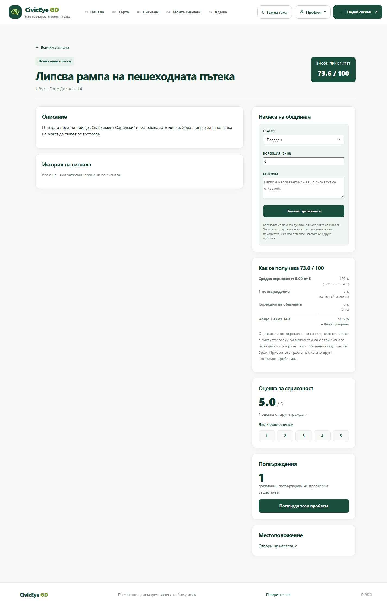
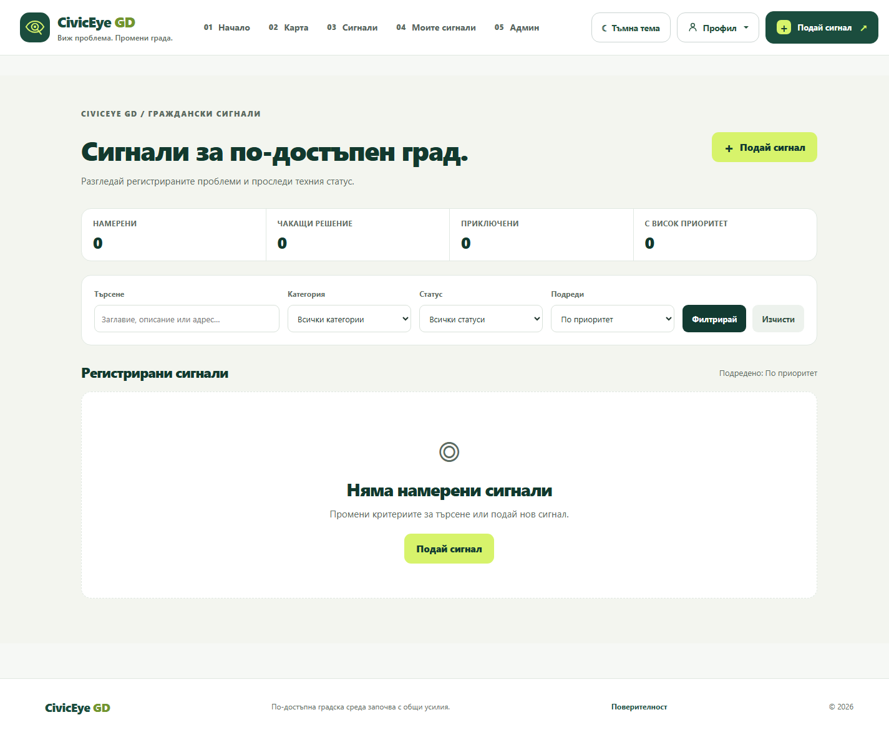
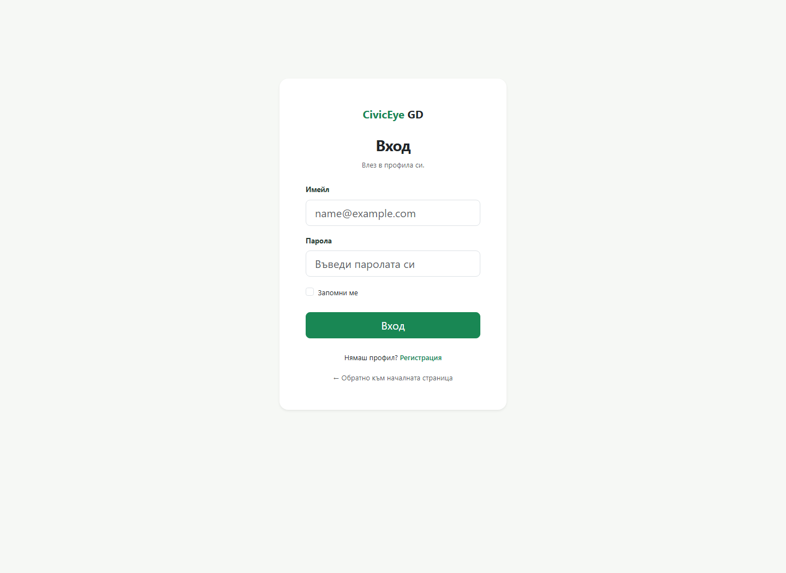
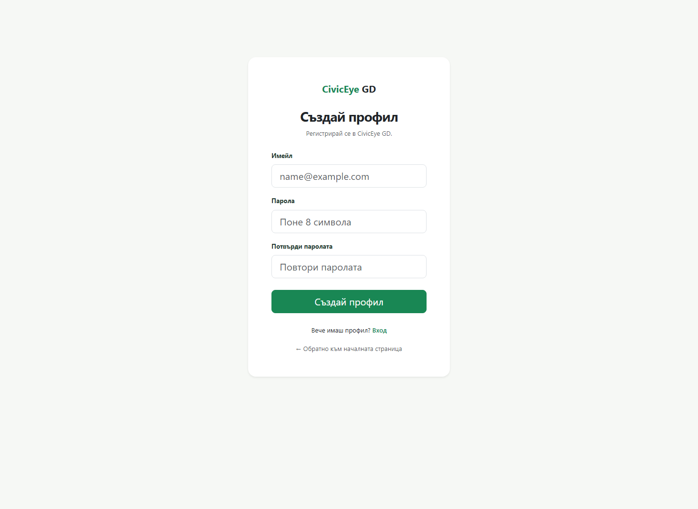
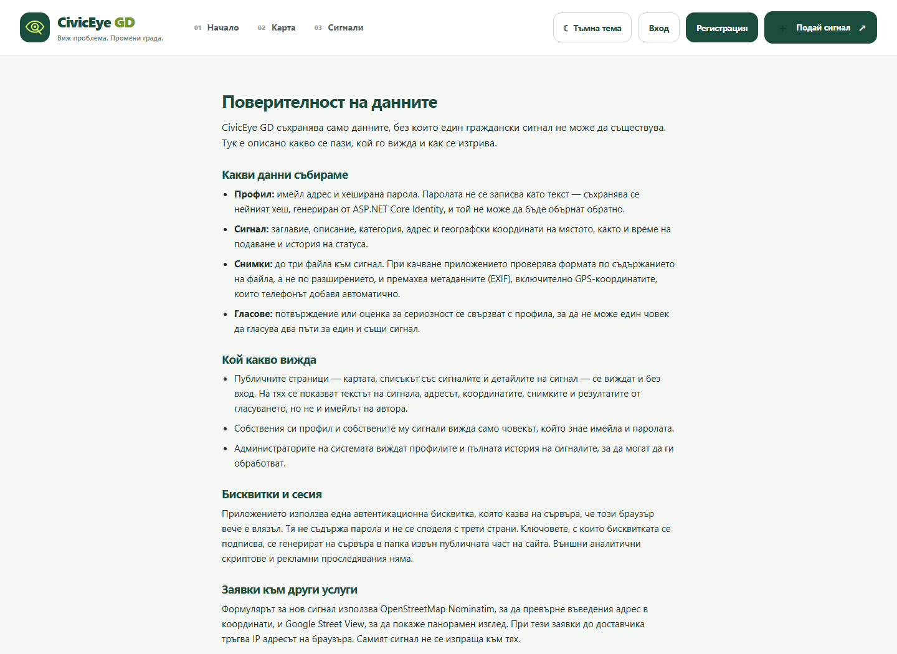

Национална олимпиада по информационни технологии
CIVICEYE GD
Уеб приложение за подаване и проследяване на граждански сигнали
за проблеми в градската среда
| Направление: | Софтуерни приложения |
| Състезателна група: | Втора група (VIII–X клас) |
| Учебна година: | 2026/2027 |
| Автор: | Селин Красимирова Шенгова |
| Училище: | ПМГ „Яне Сандански“, гр. Гоце Делчев |
| Научен ръководител: | г-жа Караахмед |
| Жива демонстрация: | https://civiceye.runasp.net |
| Хранилище с кода: | https://github.com/selinshengova-ai/CivicEyeGD |
| Лиценз: | GNU General Public License v3.0 |

Регистрационен номер: <попълва се при регистрация>
Съдържание
1. Тема
CivicEye GD — уеб приложение за подаване и проследяване на граждански сигнали за проблеми в градската среда (достъпност, тротоари, пешеходни пътеки, улично осветление, пътна настилка), с карта, обществено гласуване, изчисляван приоритет и административен отчет.
Приложението обслужва град Гоце Делчев и позволява на гражданите да опишат препятствие или повреда, да отбележат точното му място на картата, да качат до три снимки и да проследят как общината реагира. Общинският служител вижда сигналите, подредени по приоритет, променя статуса им със запис в историята и изтегля обобщен отчет. Така един разпилян по-рано поток от оплаквания се превръща в подреден, измерим и проследим процес.
2. Автори
| Поле | Стойност |
|---|---|
| Име, презиме, фамилия | Селин Красимирова Шенгова |
| ЕГН | <ЕГН на автора> |
| Адрес | <постоянен адрес на автора> |
| Телефон | <телефон за връзка> |
| Имейл | <имейл на автора> |
| Училище | ПМГ „Яне Сандански“, гр. Гоце Делчев |
| Клас / състезателна група | Втора група (VIII–X клас) |
Личните данни се попълват на хартиения формуляр при регистрацията. В тази електронна версия те са оставени като полета в ъглови скоби, за да не се публикуват в интернет.
3. Ръководител
| Поле | Стойност |
|---|---|
| Име, презиме, фамилия | г-жа Караахмед |
| Длъжност | Учител по информатика и информационни технологии |
| Училище | ПМГ „Яне Сандански“, гр. Гоце Делчев |
| Телефон | <телефон на ръководителя> |
| Имейл | <имейл на ръководителя> |
4. Резюме
CivicEye GD е уеб приложение, изградено с ASP.NET Core 10 и Razor Pages, което свързва гражданите с общинската администрация по конкретен повод — проблеми в градската среда. Гражданинът подава сигнал с описание, категория, адрес и координати, до три снимки и оценка за сериозност; другите граждани го потвърждават и оценяват; системата изчислява приоритет и подрежда административното табло по него. Общинският служител сменя статуса със запис в историята и изтегля отчет във формати PDF, XLSX и CSV.
Основните решения в проекта са свързани с доверието към данните: гласът на подателя не се брои за независим, за да не може сам да си вдигне приоритета; снимките се приемат по съдържание, а не по разширение, и от тях се изчистват метаданните с GPS-координатите; приоритетът е изчислявана, а не запазена стойност, за да няма разминаване между екраните; индексите в базата са подбрани с реално измерване, а не на око. Всичко това е покрито с автоматични тестове, които се пускат при всяка промяна.
4.1. Цели
Основната цел е да се създаде работещ инструмент, който прави гражданския сигнал проверим и проследим от подаването до решаването.
- Достъпно подаване. Всеки гражданин, дори без опит с подобни системи, да може да опише проблем и да отбележи мястото му на карта в рамките на една форма.
- Обективен приоритет. Редът на сигналите да не зависи от лична преценка, а от изчислена стойност по прозрачна формула.
- Проследимост. Всяка намеса на общината да остава записана с автор и час, а гражданинът да вижда историята.
- Защита на личните данни. Да се събират само нужните данни, да се премахват GPS-координатите от снимките и да е възможно изтриване на сигнал заедно със снимките му.
- Измеримост за общината. Да се получава отчет за натоварените места, разпределението по категории и сигналите, които чакат твърде дълго.
- Надеждност чрез тестове. Ключовите правила да са покрити с автоматични тестове, а не да се проверяват на ръка.
4.2. Основни етапи
- Проучване на проблема. Анализ на начина, по който подобни сигнали се подават и обработват днес, и на съществуващи решения от този клас.
- Проектиране на модела на данните и ролите. Определяне на същностите (сигнал, оценка, потвърждение, снимка, запис в историята) и на двете роли — гражданин и администратор.
- Реализация на гражданинската част. Формуляр за нов сигнал с карта и търсене на адрес, оценка за сериозност, снимки, публичен списък и страница с детайли.
- Реализация на административната част. Табло с филтри, промяна на статуса със запис в историята и експорти в PDF, XLSX и CSV.
- Изчисляване на приоритет и откриване на дубликати. Формула за приоритет и проверка за близък сигнал от същата категория.
- Сигурност и защита на данните. Автентикация и роли, ограничаване на честотата, предпазни HTTP заглавки, изчистване на метаданните от снимките.
- Автоматични тестове. Покриване на приоритета, снимките, дубликатите, правата, експортите и отчета.
- Разгръщане и документация. Публикуване на жива демонстрация и подготовка на пакета за олимпиадата.
4.3. Ниво на сложност
Проектът съчетава няколко различни по характер задачи, което определя и сложността му:
- пълно уеб приложение с автентикация, роли и права, а не статични страници;
- геоизчисления — проверка дали точка е в границите на града, разстояние по голям кръг между два сигнала, топлинна матрица по места;
- обработка на изображения на ниско ниво — разпознаване на формата по магически байтове и премахване на EXIF/GPS метаданни от JPEG, PNG и WEBP;
- генериране на документи — PDF отчет с диаграми и топлинна карта, .xlsx работна книга и CSV файл;
- сигурност по подразбиране — политика, която изисква вход, ограничаване на честотата, криптографски предпазни заглавки;
- работа с данни на измерване — индексите са избрани след реален замер на времето на заявките;
- автоматични тестове — 298 проверки, които се изпълняват при всяка промяна.
Нивото на сложност е над базовото уеб приложение: то изисква едновременно познаване на уеб рамката, на базата данни и на конкретни алгоритми (формула за приоритет, разстояние по голям кръг, обработка на метаданни), както и навик решенията да се проверяват с измерване и с тестове.
4.4. Логическо и функционално описание
4.4.1. Две роли
Приложението има два вида потребители, разграничени с роли в ASP.NET Core Identity:
- Гражданин (роля Citizen) — подава сигнали, оценява и потвърждава чужди сигнали, следи своя профил.
- Администратор (роля Administrator) — преглежда всички сигнали, сменя статуса им, добавя публична бележка, коригира приоритета и изтегля отчети.
Публичните страници — витрината, списъкът, картата и детайлите на сигнал — се отварят и без вход, за да не се изисква регистрация само за да се види даден проблем. Всичко останало е зад политика, която изисква автентикация, а административните страници изискват и роля „Администратор“.
4.4.2. Работен сценарий на гражданина
- Отваря страницата „Нов сигнал“ и попълва заглавие, категория, адрес и описание.
- Отбелязва мястото на картата или търси адреса, който се превръща в координати.
- Избира оценка за сериозност от 1 до 5 и прикачва до три снимки.
- Ако системата намери вече подаден близък сигнал от същата категория в радиус 50 метра, показва предупреждение за дубликат и иска потвърждение, че сигналът е нов.
- Подава сигнала и получава линк към неговата страница; по-късно проследява статуса и историята.
- На страницата на чужд сигнал може да даде оценка за сериозност и да го потвърди по веднъж.
4.4.3. Работен сценарий на администратора
- Отваря административното табло и вижда бройките по статус и банера със спешните сигнали.
- Филтрира по статус и разглежда списъка, подреден по приоритет.
- На страницата на сигнал променя статуса, добавя публична бележка и/или коригира приоритета от 0 до 10 — всяка намеса се записва в историята.
- Изтегля отчет в PDF, XLSX или CSV или разпечатва текущия изглед.
- При нужда изтрива сигнал заедно със снимките му от диска (каскадно).
4.4.4. Архитектурна диаграма
Фиг. 2. Архитектура на CivicEye GD — страници, услуги, данни, Identity и тестов проект
4.4.5. Модел на данните (опростено)
| Същност | Какво пази |
|---|---|
| Report (сигнал) | Заглавие, описание, категория, адрес, координати, статус, дата на подаване, подател, административна корекция на приоритета. |
| SeverityRating (оценка) | Оценка за сериозност 1–5 от конкретен потребител; по една на потребител за сигнал. |
| Confirmation (потвърждение) | Потвърждение от конкретен потребител; по едно на потребител за сигнал. |
| ReportImage (снимка) | Име на файл, тип, размер; файлът се пази извън публичната папка. |
| StatusHistory (история) | Автор, час, стар и нов статус, промяна на приоритета и публична бележка. |
4.4.6. Приоритет и спешност
Приоритетът е изчислявана стойност, а не число, записано в базата. Изчислява се по формулата:
където S е средната независима сериозност (1–5), C е броят независими потвърждения с таван 10, а A е административната корекция от 0 до 10. Така най-високата възможна стойност е 140/140·100 = 100 точки.
Оценките и потвържденията на самия подател не се броят за независими — човек не може да си вдигне приоритета сам. Това правило е записано на едно място (Data/IndependentVotes.cs) и оттам го четат всички екрани.
По изчислената стойност се определя етикетът: „Висок приоритет“ при 70 и нагоре, „Среден приоритет“ от 40, а под 40 — „Нисък приоритет“. Прагът за спешност (пулсиращ маркер, банер в таблото) е същият: 70.0. Правилото „кое е спешно“ живее в една константа и от нея питат картата, списъкът, таблото и отчетът, за да не означава думата „спешен“ три различни неща.
4.4.7. Откриване на дублиращи се сигнали
При подаване системата проверява дали вече има активен сигнал от същата категория на не повече от 50 метра (разстояние по голям кръг, haversine). Показват се най-много три такива съвпадения. Сървърът отказва запис, докато предупреждението не бъде признато с отметка, като проверката се прави независимо от браузърния скрипт.
4.5. Реализация
4.5.1. Технологии, версии и лицензи
| Слой / компонент | Технология | Версия | Лиценз |
|---|---|---|---|
| Уеб рамка | ASP.NET Core, Razor Pages | 10.0 | MIT |
| Език | C# (nullable, implicit usings) | 14 | — |
| Данни | Entity Framework Core | 10.0.13 | MIT |
| База данни | Microsoft.EntityFrameworkCore.Sqlite | 10.0.13 | MIT |
| База данни (алтернатива) | Microsoft.EntityFrameworkCore.SqlServer | 10.0.13 | MIT |
| База данни (алтернатива) | Npgsql.EntityFrameworkCore.PostgreSQL | 10.0.2 | PostgreSQL License |
| Идентичност | Microsoft.AspNetCore.Identity.EntityFrameworkCore | 10.0.13 | MIT |
| PDF отчет | QuestPDF (Community) | 2026.9.1 | Собствен, двоен (Community v3.0) |
| xlsx експорт | ClosedXML | 0.105.1 | MIT |
| Изглед | Bootstrap | 5.3.3 | MIT |
| Изглед | jQuery / jQuery Validation / Unobtrusive | 3.7.1 / 1.21.0 / 4.0.0 | MIT |
| Карта | Leaflet + OpenStreetMap | 1.9.4 | BSD-2-Clause / ODbL |
| Тестове | xUnit / Microsoft.NET.Test.Sdk | 2.9.3 / 17.14.1 | Apache-2.0 / MIT |
Пълният списък на чуждите библиотеки, техните версии и лицензи е в CREDITS.md и на страницата /Credits в сайта. Картографските данни са © OpenStreetMap contributors.
4.5.2. Изчисляване на приоритет
Формулата е реализирана в Services/ReportPriorityService.cs. Средната сериозност се ограничава в интервала 1–5, потвържденията се събират до 10, а административната корекция — от 0 до 10. Резултатът се нормализира към 0–100 и се закръгля до една десета. Когато сигналът няма оценки, сериозността е нула и приоритетът остава нисък — това е запасният вариант, а не грешка.
4.5.3. Снимки и метаданни (EXIF/GPS)
- До 3 снимки към един сигнал, всяка с размер до 5 MB.
- Приемат се само JPEG, PNG и WEBP, разпознати по съдържанието (магически байтове), а не по разширение или по типа, заявил браузърът. Преименуван изпълним файл се отхвърля.
- Файловете се пазят извън wwwroot (в App_Data/report-images) и се връщат през защитен маршрут, за да не се стига до тях директно по адрес.
- Името на записания файл се генерира от сървъра; опит за излизане от папката със ../ не връща валиден път.
- От всяка снимка се премахват метаданните — EXIF и GPS при JPEG, eXIf и текстовите блокове при PNG, EXIF и XMP при WEBP. Запазва се само ориентацията, без която вертикална снимка се показва обърната.
4.5.4. Сигурност
- Политика по подразбиране — всяка страница изисква вход, освен изрично публичните (витрина, начална, списък, карта, детайли, вход, регистрация, поверителност, кредити, страниците за отказан достъп и грешка).
- Ограничаване на честотата — 30 заявки в минута от адрес за формите (вход, регистрация, нов сигнал); при превишаване се връща 429 с разбираемо съобщение на български.
- Предпазни HTTP заглавки — Content-Security-Policy (object-src 'none', base-uri 'self', form-action 'self', frame-ancestors 'none'), X-Frame-Options: DENY, X-Content-Type-Options: nosniff, Referrer-Policy, Permissions-Policy без камера, микрофон и плащания.
- Пароли и заключване — минимална дължина 8 знака, задължителни цифра и малка буква; след 5 грешни опита за 10 минути акаунтът се заключва. Съобщенията за грешка са на български.
- Сесии — една автентикационна бисквитка (HttpOnly, SameSite=Lax, 7 дни с плъзгащо подновяване), а ключовете за защита се пазят извън публичната част, така че рестарт да не изхвърли влезлите потребители.
- Извън режим на разработка — HSTS и обработка на заглавките от обратния прокси.
4.5.5. Автоматични тестове
Тестовият проект Tests/CivicEyeGD.Tests (xUnit, .NET 10) покрива ключовите правила. Резултатът от реално изпълнение на dotnet test -c Release:
Това са 298 успешни проверки в 20 тестови класа без нито един неуспешен. Всеки тест си създава временна SQLite база и временна папка, затова не пипа работещите данни и може да се пуска многократно. Класовете са: AdminWorkflowTests, AuthorizationMetadataTests, CreateReportTests, DbSeederTests, DetailsOfficeTests, DuplicateReportTests, ImageMetadataScrubberTests, PasswordChangeTests, NumberTextTests, ReportsListOrderTests, AdminPanelNumbersTests, ReportEngagementTests, ReportGeographyTests, ReportPdfTests, ReportPriorityServiceTests, ReportResponseTests, ResponseDashboardTests, ReportImageStorageTests, ReportVocabularyTests, UrgencyAndExportTests.
Обхватът включва: приоритета (формулата, ограниченията, закръглянето и границите на етикетите), снимките (приемане по съдържание, отказ на преименуван изпълним файл, изчистване на метаданните), проверките на формата „Нов сигнал“, дубликатите, данните (по едно гласуване на потребител, каскадно изтриване), правата и демо данните, смяната на парола, картата и спешността, намесата на общината, реакцията и изчакването, експортите и PDF отчета. Същата команда се изпълнява автоматично от GitHub Actions при всяко качване.
4.5.6. Индекси, подбрани с измерване
Индексите в базата не са поставени на око, а след замер. Тестовете върху временна база със 17 000 сигнала дават следните стойности:
| Решение | Преди | След | Извод |
|---|---|---|---|
| Индекс по CreatedAt | 15,4 ms | 10,8 ms | Поставен — ускорява подреждането по дата. |
| Индекс по (Latitude, Longitude) | 7,52 ms | 0,43 ms | Поставен — проверката за дубликат става многократно по-бърза. |
| Категория като първа колона | 16,78 ms | 42,64 ms | Отхвърлен — филтърът по категория се влошава рязко. |
| Индекс по статус | 20,37 ms | 20,26 ms | Не е поставен — разликата е под прага на шума. |
Освен това са добавени уникални индекси по двойката (сигнал, потребител) за оценките и потвържденията, за да не може един човек да гласува два пъти дори при директен запис в базата.
4.5.7. Експорти и отчети
- PDF — генериран на сървъра с QuestPDF (Community), с обобщение, диаграми по категории и места, топлинна матрица категория × статус и списък на сигналите, които чакат.
- XLSX — работна книга с дванадесет колони, включително етикет за приоритета и последна колона „Реакция, дни“.
- CSV — с UTF-8 BOM, разделител запетая по RFC 4180, същите колони и неутрализиране на формула-инжекция (водещите символи =, +, -, @ се обезвреждат).
- Мярката за реакция живее в Services/ReportResponse.cs и оттам я четат и таблото, и трите експорта, за да не се смятат дни на две места. Прагът за „бавно чакане“ е 30 дни.
4.5.8. Разгръщане
- Живата демонстрация е на https://civiceye.runasp.net; локално се стартира с dotnet run.
- Данните (база, снимки, ключове за защита) се пазят в App_Data — извън публичната папка.
- Публикуването се прави с dotnet publish CivicEyeGD.csproj -c Release -r win-x64 --self-contained false -o publish; флагът -r win-x64 не е козметика — без него архивът влачи библиотеки за Linux и macOS.
- Dockerfile описва контейнерен образ; финалният слой доинсталира fontconfig и libfreetype6, защото без тях PDF отчетът не чертае българските букви.
- Пакетът за олимпиадата се прави с Tools/make-submission-archive.ps1 и е на две части — архив с кода, документите и тестовете и (с ключа -IncludeExecutable) архив с публикуваното приложение и файл IZPALNENIE.txt с указания за стартиране.
4.5.9. Лиценз
CivicEye GD се разпространява под GNU General Public License v3.0 (пълният текст е във файла LICENSE). Кодът в Pages/, Services/, Data/, Migrations/ и Tests/ е авторски. Изключението е скелетът: проектът започва от стандартния шаблон на dotnet new, чиито страници постепенно са презаписани. Чуждите библиотеки си остават с техните лицензи — виж CREDITS.md.
4.6. Описание на приложението
4.6.1. Стартиране
Изисква се .NET 10 SDK. От основната папка на проекта:
При първо стартиране приложението само създава базата: прилага миграциите и създава ролите и демо акаунтите. Примерните сигнали (седемнадесет на брой, по реални улици в Гоце Делчев) се добавят само когато ключът Seed:DemoReports е включен (по подразбиране е), базата е празна и демо акаунтите имат зададени пароли.
Публично достъпни без вход са витрината, началната страница, входът, регистрацията, списъкът със сигнали, картата и страницата на отделен сигнал. Всичко останало изисква вход, а административното табло — и роля „Администратор“.
4.6.2. Тестови акаунти
Паролите не се публикуват в документацията и в хранилището. Задават се през dotnet user-secrets (локално) или през променливи на средата / файл App_Data/seed-accounts.json (на хост) и се съобщават на комисията по начина, предвиден в регламента.
| Роля | Имейл | Парола | Конфигурационен ключ на паролата |
|---|---|---|---|
| Гражданин | citizen.demo@civiceye.test | <парола от конфигурацията> | SeedAccounts:CitizenPassword |
| Гражданин (втори) | citizen.two@civiceye.test | <парола от конфигурацията> | SeedAccounts:SecondCitizenPassword |
| Администратор | admin.demo@civiceye.test | <парола от конфигурацията> | SeedAccounts:AdminPassword |
Вторият гражданин е нужен, защото подателят не участва в оценяването на собствения си сигнал — с два акаунта се вижда как се натрупват оценките и потвържденията и как се променя приоритетът.
4.6.3. Ръководство за гражданина
- Витрина и начална страница. Витрината обяснява идеята, а началната страница показва основните числа за сигналите.
- Списък със сигнали. Търсене и филтриране по категория и статус; над списъка се виждат числата за намерените сигнали.
- Карта. Всички сигнали с координати като маркери, оцветени по средна сериозност. Спешните пулсират. Приключените не се показват по подразбиране, но се връщат с отметка и остават в статистиката по статуси.
- Нов сигнал. Форма с карта за избор на място или търсене на адрес, до три снимки и оценка за сериозност; предупреждение при близък сигнал от същата категория.
- Страница на сигнала. Описание, снимки, мини-карта, изчислен приоритет, история на статуса и възможност за оценка и потвърждение.
- Поверителност. Обяснение какви данни се пазят, кой ги вижда и как се изтриват.
4.6.4. Ръководство за администратора
- Табло. Четири карти с бройки (всички активни и по статус), банер със спешните сигнали и филтър по статус.
- Намеса на общината. На страницата на сигнал се сменя статусът, добавя се публична бележка и/или се коригира приоритетът от 0 до 10. Всяка намеса остава в историята с автор и час; натискане без промяна не записва нищо.
- Експорти. PDF отчет, .xlsx работна книга, CSV файл и разпечатване на текущия изглед, подредени по приоритет.
- Изтриване. Бутон „Изтрий сигнала“ премахва реда заедно със снимките от диска, оценките, потвържденията и историята, след потвърждение в браузъра.
4.6.5. Поддръжка
- Автоматичните тестове се пускат с една команда (dotnet test) и автоматично от GitHub Actions при всяко качване.
- Паролата на демо акаунт се сменя, като се смени стойността в конфигурацията — при следващия старт seed-ът подновява паролата в базата.
- При публикация извън локалната машина App_Data трябва да е трайно хранилище, иначе сигналите изчезват при рестарт, а ключовете за защита правят влезлите потребители анонимни.
4.6.6. Съответствие със задължителните изисквания (т. IV.1 от регламента)
Регламентът изрежда задължителните изисквания към проектите в раздел IV.1. Таблицата показва как CivicEye GD отговаря на всяко от тях.
| Задължително изискване | Как е изпълнено в CivicEye GD |
|---|---|
| Авторска разработка | Кодът в Pages, Services, Data, Migrations и Tests е написан от автора; единственото изключение (шаблонът на dotnet new) е описано в CREDITS.md. |
| Разработката е приложима и работеща | Жива демонстрация на https://civiceye.runasp.net и локално стартиране с dotnet run. |
| Наличие на изходен код | Публично хранилище https://github.com/selinshengova-ai/CivicEyeGD. |
| Документация по приложения образец | Този документ, съставен по структурата на Приложение 1 (части 1–4 и подточки 4.1–4.7). |
| Указания за инсталация и изпълнение | Раздел 4.6.1 и файлът IZPALNENIE.txt в архива с изпълнимия вариант. |
| Лиценз на разработката | GNU General Public License v3.0; чуждите компоненти са с техни собствени лицензи, изброени в CREDITS.md. |
| Защита на личните данни | Ограничен набор от данни, изчистване на EXIF/GPS от снимките, политика за поверителност и каскадно изтриване на сигнал със снимките. |
| Проверимо качество | 298 автоматични теста в 20 класа, изпълнявани и от GitHub Actions при всяка промяна. |
4.7. Заключение
Постигнат резултат
Изградено е завършено, работещо уеб приложение, което покрива целия път на един граждански сигнал — от подаването до отчета. Двете роли са разграничени, приоритетът е прозрачно изчисляван, снимките са защитени, а администраторът разполага с отчети. Живата демонстрация и публичното хранилище правят проекта проверим от всеки, а 298 автоматични теста — надежден при промени.
Къде може да се приложи
- Общини, които искат подреден канал за граждански сигнали за градската среда.
- Училищни и обществени кампании за достъпна среда и безопасен път до училище.
- Като основа за разширяване към други типове сигнали (отпадъци, зелени площи, паркиране).
Възможности за развитие
- Уведомления по имейл при промяна на статуса на подаден сигнал.
- Публично API за обмен на данни с общински системи.
- Повече езици и достъпност на интерфейса.
- Разширяване на отчета с времеви редове и сравнение между периоди.
Приложение А. Съответствие с критериите за оценяване (Приложение 6в)
Таблицата свързва критериите за оценяване с това къде в проекта и в документацията се вижда изпълнението им.
| Критерий | Къде се вижда |
|---|---|
| Актуалност и значимост на темата | Раздел 1 (Тема) и 4.1 (Цели) — решава реален проблем на градската среда. |
| Пълнота и завършеност на разработката | Раздели 4.4–4.6 — две роли, карта, гласуване, приоритет, история, отчети, защита на данни. |
| Степен на сложност и самостоятелност | Раздел 4.3 и 4.5 — геоизчисления, обработка на метаданни, генериране на PDF/XLSX/CSV, измерени индекси. |
| Техническо изпълнение и качество на кода | Раздел 4.5 и структурата на проекта (Program.cs, Data/, Services/, Pages/); 298 теста в 20 класа. |
| Функционалност на приложението | Раздел 4.6 — стартиране, тестови акаунти, ръководства за гражданин и администратор. |
| Оформление и интерфейс | Раздел 4.6 и фигурите 3–14; светла и тъмна тема, адаптивен изглед. |
| Документация | Този документ по структурата на Приложение 1; README.md и CREDITS.md. |
| Защита на личните данни и сигурност | Раздели 4.5.3–4.5.4 и 4.6.6 — изчистване на GPS метаданни, политика за поверителност, предпазни заглавки. |
| Възможност за практическо приложение | Раздел 4.7 — приложение в общини, училищни кампании и др. |
Приложение Б. Списък на фигурите
Всички фигури са в папка Docs/media/ и се отварят с относителни пътища спрямо този документ.
Фигури в текста
- Фиг. 1. QR код към живата демонстрация — media/qr-civiceye-gd.png (корица).
- Фиг. 2. Архитектурна диаграма (раздел 4.4.4) — начертана в документа.
Екранни снимки на приложението (раздел 4.6)








